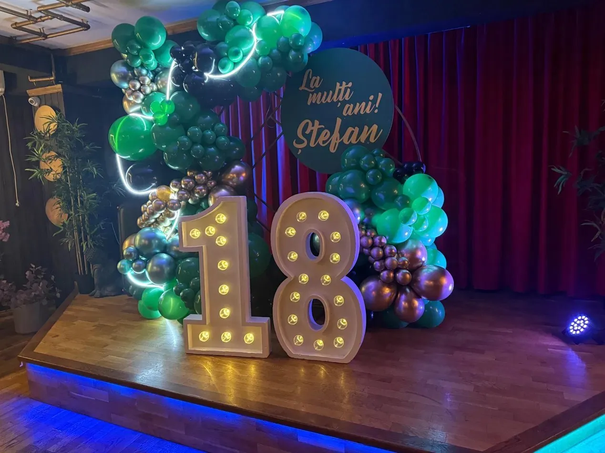
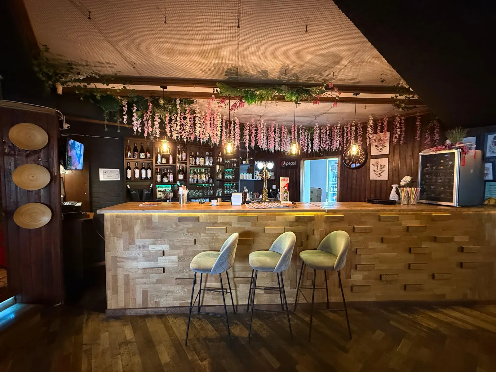

Majoratul e prima petrecere mare pe care o organizezi „ca un adult” — și, de obicei, prima la care descoperi cât de multe detalii sunt de pus la punct. Ghidul ăsta te duce prin tot procesul, pas cu pas: când să începi, cum îți împarți bugetul, ce să întrebi locația, ce meniu să alegi și ce să nu uiți în ultima săptămână.

1. Când începi organizarea
Cea mai des întâlnită greșeală la majorat e că se începe prea târziu. În Galați, sălile bune se ocupă vinerea și sâmbăta, iar în lunile cu multe majorate (primăvara și toamna, când se strâng zilele de naștere ale colegilor de clasă) concurența e mare.
| Cu cât timp înainte | Ce faci |
|---|---|
| 2–3 luni | Stabilești data, bugetul și lista aproximativă de invitați |
| 6–8 săptămâni | Rezervi locația și DJ-ul sau trupa |
| 4 săptămâni | Trimiți invitațiile, alegi tema și decorul, comanzi tortul |
| 2 săptămâni | Stabilești meniul final cu restaurantul |
| 3–5 zile | Confirmi numărul exact de invitați |
2. Cum îți faci bugetul
Nu există un „preț standard” pentru un majorat: diferența dintre o petrecere de 20 de prieteni și una de 80 de invitați e uriașă. În loc să pornești de la o sumă generală, împarte bugetul pe categorii:
- Mâncare și băutură — de obicei cea mai mare parte din buget. Aici contează cel mai mult numărul de invitați.
- Locația — unele săli cer chirie separată, altele includ spațiul în meniu. Întreabă din prima.
- Muzica — DJ, trupă sau playlist propriu.
- Decorul — baloane, cifre luminoase, panou foto, aranjamente.
- Tortul și eventual candy bar.
- Fotograf — opțional, dar pozele rămân.
💡 Truc de buget: platourile de împărțit ies aproape întotdeauna mai ieftin decât porțiile individuale în trei feluri. Un platou de sushi de 500g la 85 lei sau un platou crispy de 900g la 75 lei hrănesc mai mulți oameni și arată mai bine pe masă.
3. Cum alegi locația în Galați
Înainte să semnezi ceva, pune-i localului aceste întrebări:
- Sala e doar pentru noi sau împărțim spațiul cu alți clienți?
- Există scenă, sistem de sunet și lumini, sau le aducem noi?
- Până la ce oră putem sta?
- Putem aduce tortul și decorul nostru?
- Cum se face plata și cât e avansul?
- Ce opțiuni aveți pentru invitații vegetarieni sau cu alergii?
- E ușor de ajuns acolo și există loc de parcare în zonă?
La Wok and Noodles, sala de evenimente are scenă, sistem de lumini și bar, iar restaurantul e în centrul Galațiului, pe Strada Regimentul 11 Siret 50A, vizavi de Palatul de Justiție. Toate detaliile sunt pe pagina petreceri private în Galați.

4. Ce meniu alegi
La 18 ani, invitații sunt în mare parte colegi și prieteni care au crescut cu sushi, ramen și street food asiatic. Meniul clasic de restaurant (aperitiv, sarmale, friptură) nu îi impresionează. Un meniu asiatic, în schimb, devine subiect de conversație.
Ce merge cel mai bine la un majorat
- Platouri de sushi (Samurai, Tokyo, Sushi Mix) — arată spectaculos și se împart ușor.
- Platoul Spicy Crispy — aripioare crispy, inele de ceapă, pachețele de primăvară, cartofi, nuggets de brânză și sticks de mozzarella. Dispare primul de pe masă.
- Tăiței la wok — fiecare își alege baza și sosul, deci mulțumești pe toată lumea.
- Deserturi — mochi, înghețată sau clătite cu înghețată, pe lângă tort.
Băuturi: atenție la invitații sub 18 ani
Sărbătoritul are 18 ani, dar mulți colegi s-ar putea să nu fi împlinit încă. Legea interzice servirea alcoolului persoanelor sub 18 ani, inclusiv la petreceri private, așa că planifică din timp mocktailuri, limonade și sucuri. Barul nostru le are pe toate.
5. Temă, decor și muzică
O temă simplă face petrecerea mai memorabilă și pozele mai frumoase. Câteva idei care merg bine cu un local asiatic:
- Tokyo Night — lumini neon, roșu și negru, lampioane.
- Anime / K-pop — perfectă pentru o generație care urmărește anime și ascultă K-pop.
- Gold & Black — elegant, merge cu cifrele „18” aurii și baloane negre.
- Neon party — tricouri albe, brățări fosforescente și luminile scenei.
Pentru muzică, un DJ citește sala mai bine decât un playlist. Dacă alegi trupă, verifică dinainte dacă există scenă și spațiu pentru instrumente.
6. Checklist final
- Data și ora confirmate cu locația
- Avans plătit, condiții de plată clare
- Lista finală de invitați trimisă restaurantului
- Meniul stabilit, inclusiv variante vegetariene și alergii
- Băuturi fără alcool pentru invitații sub 18 ani
- DJ sau trupă confirmați
- Decorul și tortul — cine le aduce și la ce oră
- Fotograf sau un prieten desemnat pentru poze
- Transport pentru invitați la final
Întrebări frecvente
Cu cât timp înainte se rezervă locația pentru majorat în Galați?
Ideal cu 6–8 săptămâni înainte, mai ales pentru vineri și sâmbătă. Minimul recomandat este de 2 săptămâni.
Cât costă un majorat în Galați?
Depinde mult de numărul de invitați și de meniu. Cea mai mare parte a bugetului merge pe mâncare și băutură, apoi pe muzică, decor și tort. Cere oferte concrete de la 2–3 locații pentru același număr de invitați ca să compari corect.
Ce meniu se potrivește la un majorat?
Preparatele de împărțit merg cel mai bine: platouri de sushi, platouri crispy, pachețele de primăvară și tăiței la wok la alegere. Sunt spectaculoase, se împart ușor și mulțumesc gusturi diferite.
Se poate servi alcool la majorat dacă unii invitați nu au 18 ani?
Nu, alcoolul nu se servește persoanelor sub 18 ani, nici la petreceri private. Pregătește mocktailuri, limonade și sucuri pentru ei.
Pot organiza majoratul la Wok and Noodles?
Da. Avem sală de evenimente cu scenă, sistem de lumini și bar, plus meniu personalizat. Rezervările se fac la 0770 803 320 sau pe WhatsApp.